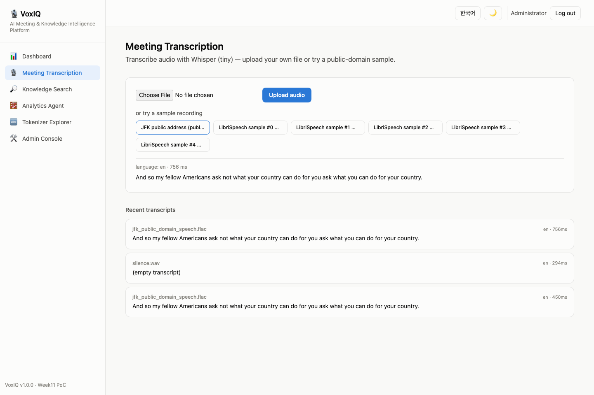
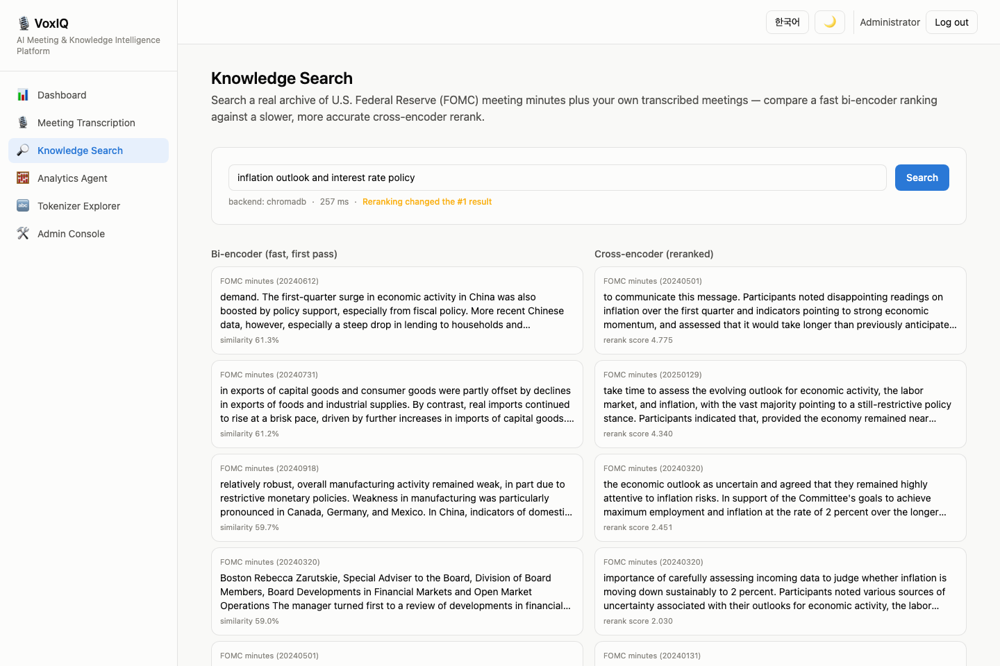
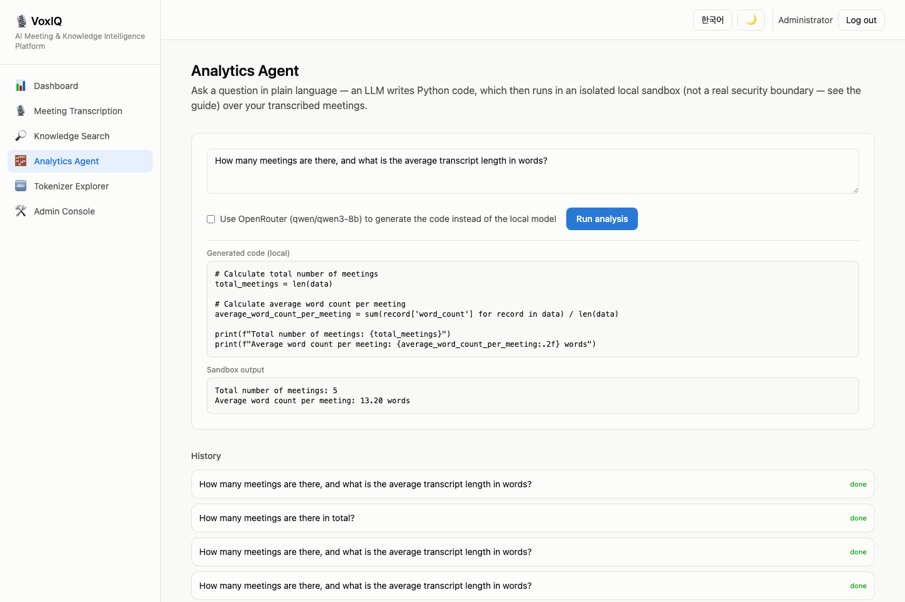
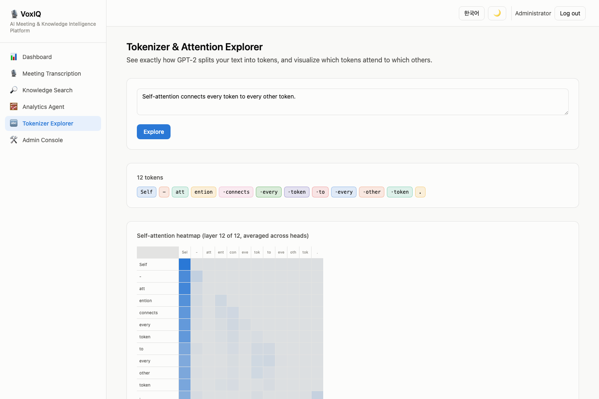
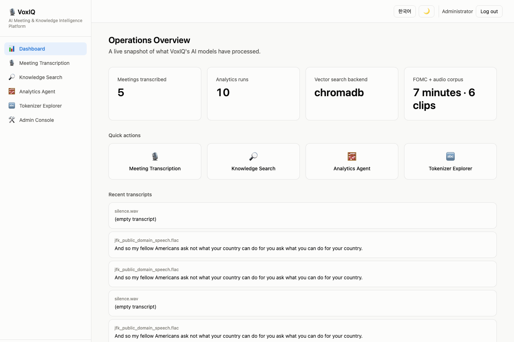
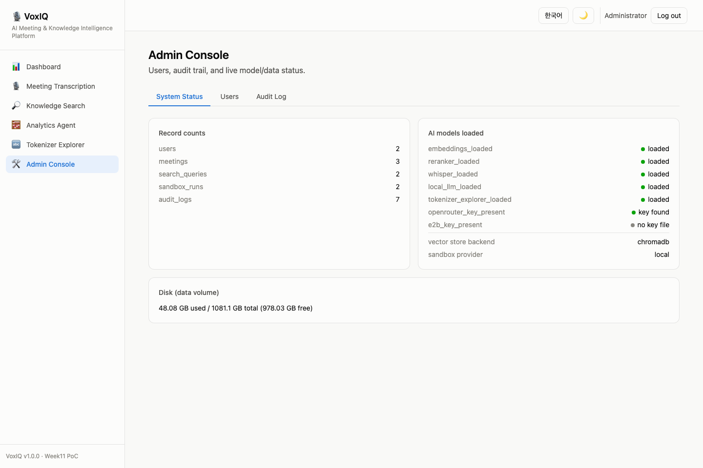
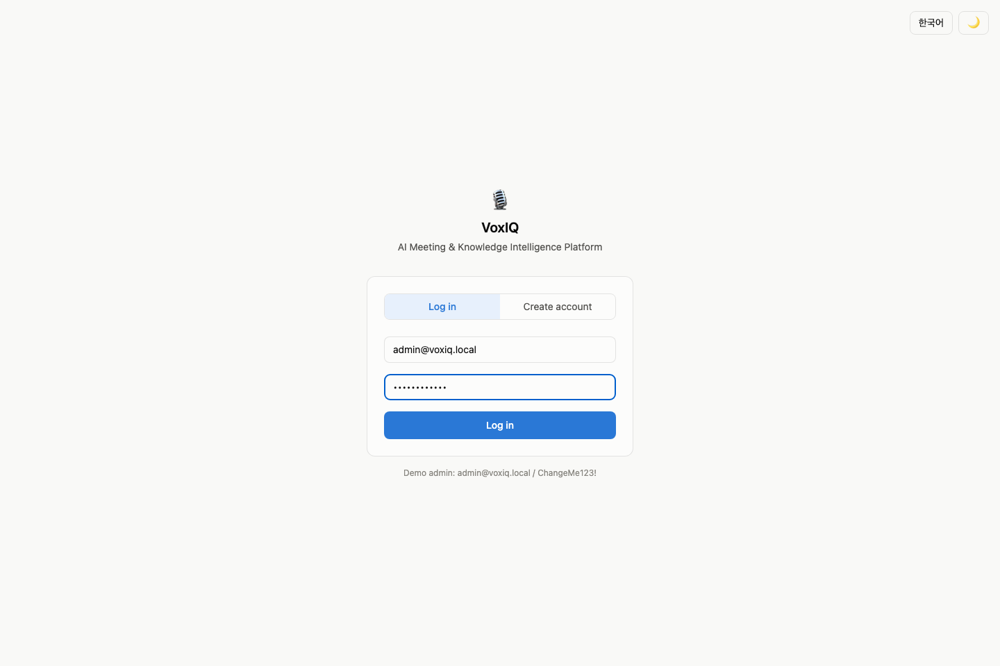

AI 엔지니어링 포트폴리오 프로젝트AI Engineering Portfolio Project · AI 회의·지식 인텔리전스 플랫폼AI Meeting & Knowledge Intelligence Platform
VoxIQ
VoxIQ는 네 가지 AI 축 — 임베딩/리랭크, 오디오 음성인식, 코드 실행 샌드박스, LLM 내부구조(토큰화·셀프어텐션) — 를 "회의록 전사 → 지식 검색 → 분석"이라는 하나의 실제 업무 흐름으로 통합한 PoC입니다. VoxIQ combines four AI pillars — embeddings/reranking, audio speech recognition, a code-execution sandbox, and LLM internals (tokenization/self-attention) — into one real workflow an ops/knowledge team would actually use: transcribe → search → analyze.
로컬 5개 + 옵션 클라우드 1개5 local + 1 optional cloud
TypeScript · Vite · Tailwind
Docker Compose, 자동 포트탐색auto port-detect
6개 AI 모델The six AI models
| 모델Model | 역할Role | 위치Location |
|---|---|---|
sentence-transformers/all-MiniLM-L6-v2 | bi-encoder 임베딩 (검색 1차)Bi-encoder embeddings (retrieve) | local |
cross-encoder/ms-marco-MiniLM-L-6-v2 | cross-encoder 리랭커 (검색 2차)Cross-encoder reranker | local |
openai-whisper (tiny) | 음성 전사Speech transcription | local |
Qwen/Qwen2.5-0.5B-Instruct | 분석 코드 생성 (기본)Analytics code-gen (default) | local |
gpt2 | 토크나이저/어텐션 탐색Tokenizer/attention explorer | local |
qwen/qwen3-8b (OpenRouter)(via OpenRouter) | 분석 코드 생성 (옵션 업그레이드)Analytics code-gen (opt-in upgrade) | cloud, opt-in |
다섯 개의 로컬 모델이 기본 경로이며 API 키 없이 항상 동작합니다. OpenRouter 경로는 사용자가 체크박스로 명시적으로 선택할 때만 사용되며, 이번 빌드에서 실제 키로 검증했습니다(측정 지연시간 6.3초) — 이 저장소의 Week1 PoC("CommerceIQ")가 이미 쓰고 있는 "로컬 기본, 클라우드는 선택적 업그레이드" 하이브리드 패턴을 그대로 따릅니다.
The five local models are always the default path and work with zero API keys. The OpenRouter path is a strictly user-toggled checkbox, validated with a real key during this build (measured latency: 6.3s) — following the same "local default, cloud opt-in" hybrid pattern already used by this repository's Week1 PoC ("CommerceIQ").
기능 둘러보기Feature Walkthrough
🎙️ 회의 전사Meeting Transcription
오디오를 업로드하거나, 공개 도메인 샘플(JFK 연설 + LibriSpeech 5개 클립) 중 하나를 클릭하면 Whisper(tiny)가 즉시 전사 텍스트와 감지된 언어를 반환합니다. 전사 결과는 자동으로 임베딩되어 지식 검색 색인에 추가됩니다.Upload audio, or click one of the public-domain samples (a JFK speech + 5 LibriSpeech clips), and Whisper (tiny) returns a transcript and detected language in real time. Every transcript is automatically embedded and added to the Knowledge Search index.

🔎 지식 검색Knowledge Search
실제 미국 연방준비제도(FOMC) 회의록 7건과 사용자가 전사한 회의록을 대상으로, bi-encoder만 사용한 1차 결과와 cross-encoder로 재정렬한 결과를 나란히 비교합니다 — retrieve-then-rerank 트레이드오프를 실제로 눈으로 확인할 수 있습니다.Searches a real archive of 7 U.S. Federal Reserve (FOMC) meeting minutes plus your transcribed meetings, showing the bi-encoder-only first pass and the cross-encoder-reranked result side by side — making the retrieve-then-rerank trade-off directly visible.

🧮 분석 에이전트Analytics Agent
자연어 질문을 하면 LLM(로컬 Qwen2.5-0.5B 기본, 또는 OpenRouter qwen3-8b 옵션)이 Python 분석 코드를 생성하고, 리소스 제한이 걸린 격리 서브프로세스("교육용" 샌드박스, 프로덕션 보안 경계 아님)에서 실행해 결과를 반환합니다.Ask a question in plain language and an LLM (local Qwen2.5-0.5B by default, or OpenRouter's qwen3-8b as an opt-in) writes Python analysis code, which runs in a resource-limited, isolated subprocess (a "teaching-grade" sandbox, not a production security boundary) and returns the result.

⚠️ 실제로 이 빌드에서 로컬 0.5B 모델이 데이터 구조를 잘못 가정한 코드를 생성해 실패한 사례를 발견·수정했습니다 — 자세한 내용은 ../../../debug/issue-02-local-llm-misreads-dict-shape.md 참고.
⚠️ This build actually found and fixed a real case where the local 0.5B model generated code that assumed the wrong data structure — see ../../../debug/issue-02-local-llm-misreads-dict-shape.md for the full story.
🔤 토크나이저 & 어텐션 탐색기Tokenizer & Attention Explorer
입력 텍스트를 GPT-2 토크나이저로 실제 분해하고, 선택한 레이어의 셀프어텐션 가중치(12개 헤드 평균)를 히트맵으로 시각화합니다 — "어텐션은 모든 토큰을 모든 토큰과 연결한다"는 개념을 문자 그대로 눈으로 확인할 수 있습니다.Tokenizes your input text with the real GPT-2 tokenizer and visualizes a chosen layer's self-attention weights (averaged across 12 heads) as a heatmap — making the "attention connects every token to every other token" concept literally visible.

📊 대시보드Dashboard

🛠️ 관리자 콘솔Admin Console
사용자 관리, 모든 AI 호출의 감사 로그, 6개 모델의 실시간 로딩 상태, 디스크 사용량을 확인합니다.Manages users, an audit log of every AI call, live loaded-status for all 6 models, and disk usage.

🔐 로그인 / 회원가입Login / Sign-up

아키텍처Architecture
전체 시스템 다이어그램, 저장소 모델, 프로덕션 확장 다이어그램은 저장소의 The full system diagram, storage model, and production-scaling diagram also live in the repository's architecture.md 에도 동일하게 포함되어 있습니다 (GitHub에서 바로 렌더링됩니다). 아래는 핵심 시스템 다이어그램입니다.(renders natively on GitHub). The core system diagram is reproduced below.
flowchart TB
subgraph Client["Browser"]
SPA["React SPA (TypeScript / Vite / Tailwind)"]
end
subgraph Container["Docker container — voxiq"]
API["FastAPI application (Python 3.11)"]
subgraph Models["AI models"]
EMB["① all-MiniLM-L6-v2 — bi-encoder"]
RRK["② ms-marco-MiniLM-L-6-v2 — reranker"]
ASR["③ Whisper tiny — ASR"]
QWEN["④ Qwen2.5-0.5B — local code-gen"]
TOK["⑤ GPT-2 — tokenizer/attention"]
OR["⑥ qwen3-8b via OpenRouter (opt-in)"]
end
SANDBOX["Local code sandbox (teaching-grade)"]
subgraph Storage["Storage"]
SQL[("SQLite")]
VDB[("Chroma vector store")]
end
API --> Models
API --> SANDBOX
API --> Storage
end
subgraph External["External (opt-in only)"]
ORAPI["OpenRouter API"]
end
SPA <-->|"HTTPS / JSON + JWT"| API
OR --> ORAPI
💡 다이어그램이 보이지 않는다면 인터넷 연결(Mermaid CDN)이 필요합니다. 오프라인에서는 저장소의 architecture.md / flowchart.md를 GitHub 또는 VS Code 미리보기로 확인하세요.
💡 If the diagram doesn't render, it needs an internet connection (Mermaid CDN). Offline, view the repository's architecture.md / flowchart.md on GitHub or in an editor preview instead.
왜 이 스택인가Why this stack
bi-/cross-encoder 결과 비교 UI와 어텐션 히트맵은 Streamlit의 기본 컴포넌트로 깔끔하게 표현하기 어렵습니다. Streamlit이 아닌 FastAPI + React를 택한 상세 근거는 The bi-/cross-encoder comparison UI and the attention heatmap don't cleanly fit Streamlit's default component set. The full reasoning for choosing FastAPI + React over Streamlit is in architecture.md §2.
플로우차트Flowcharts
각 기능의 함수 단위 플로우차트는 저장소의 Per-feature, function-level flowcharts live in the repository's flowchart.md에 7개(인증, 회의 전사, 지식 검색, 분석 에이전트, 토크나이저 탐색기, 관리자 콘솔, 컨테이너 부트스트랩)로 정리되어 있습니다. 대표로 지식 검색 파이프라인을 아래에 재현합니다. as 7 diagrams (auth, meeting transcription, knowledge search, analytics agent, tokenizer explorer, admin console, container bootstrap). The Knowledge Search pipeline is reproduced below as a representative example.
flowchart TD
A["query text, top_k"] --> B["POST /api/search"]
B --> C["embeddings.embed(query) — all-MiniLM-L6-v2"]
C --> D["vectorstore.query(vector, top_k*3) — over-fetch candidates"]
D --> E["bi_encoder_results = candidates[:top_k] (retrieve stage)"]
D --> F["reranker.rerank(query, candidate texts) — ms-marco-MiniLM-L-6-v2"]
F --> G["cross_encoder_results = re-sorted by score (rerank stage)"]
E & G --> H["top1_changed = bi[0].id != cross[0].id"]
H --> I["INSERT search_queries + audit_logs"]
I --> J["200 OK — both rankings + top1_changed flag"]
하드웨어 최소 요구사항Minimum Hardware Requirements
| 최소Minimum | 권장Recommended | |
|---|---|---|
| RAM | 8 GB | 16 GB |
| 디스크 여유공간Free disk space | 10 GB | 15 GB |
| CPU | 4 코어cores | 8+ 코어cores |
| GPU | 불필요 — 모든 로컬 모델이 CPU에서 실행되도록 선택됨 (NVIDIA GPU가 있으면 자동 감지하여 CUDA 휠 사용)Not required — every local model was chosen to run on CPU (an NVIDIA GPU, if present, is auto-detected and used via the CUDA wheel) | |
| OS | macOS / Windows (Docker Desktop) / Linux | |
실측 컨테이너 메모리(2.82 GiB, 모델 5개 모두 로딩 후), 이미지 크기(3.45 GB), 부트스트랩 소요시간(274초, 완전 초기 상태 기준)은 Measured container memory (2.82 GiB with all 5 models loaded), image size (3.45 GB), and bootstrap timing (274s from a genuinely empty state) are recorded in ../../../history/v1.0.0.md.
빠른 시작Quick Start
cd week2/PoC/projects/voxiq ./scripts/setup.sh # 최초 1회: 이미지 빌드, 빈 포트 탐색, 컨테이너 시작# first time: build image, find a free port, start container ./scripts/run.sh # 이후 재시작# subsequent restarts ./scripts/stop.sh # 컨테이너 정지 (삭제 아님)# stop without deleting ./scripts/verify_e2e.sh # 전체 end-to-end 검증# full end-to-end verification ./scripts/download_models.sh # (옵션) CLI로 5개 로컬 AI 모델 강제 다운로드/검증# (optional) force-download/verify all 5 local AI models via CLI ./scripts/download_data.sh # (옵션) 공개 데이터셋 2종 강제 재다운로드# (optional) force-refresh the 2 public datasets
모델 다운로드를 포함한 모든 설치·실행 과정은 오직 셸 스크립트로만 이루어집니다 — UI 클릭이나 수동 docker exec가 전혀 필요 없습니다. setup.sh/run.sh가 이미 백그라운드에서 모델을 자동 다운로드하며, download_models.sh는 그 과정을 명시적·동기적 CLI 명령으로 노출한 것입니다.
Every install/run step — including model downloads — is driven entirely by shell scripts, with no UI clicks or manual docker exec required. setup.sh/run.sh already download models automatically in the background; download_models.sh just exposes that same step as an explicit, synchronous CLI command.
데모 관리자 계정: Demo admin account: admin@voxiq.local / ChangeMe123!
⚠️ Windows에서는 Git Bash 또는 WSL2에서 이 스크립트들을 실행하세요 (이 프로젝트 시리즈의 다른 env_set_up.sh/run.sh와 동일한 관례입니다).
⚠️ On Windows, run these scripts from Git Bash or WSL2 — the same convention already used by this project series' other env_set_up.sh/run.sh scripts.
API 개요API Overview
FastAPI는 자동 문서를 제공합니다: 컨테이너 실행 중 FastAPI provides automatic docs — while the container is running, visit http://localhost:<port>/docs
| Endpoint | 설명Description |
|---|---|
POST /api/auth/signup · /login · /logout · GET /me | JWT 인증 (쿠키 또는 Bearer)JWT auth (cookie or Bearer) |
GET /api/meetings/samples · POST /transcribe · /transcribe-sample/{f} | 회의 전사Meeting transcription |
POST /api/search · GET /status | 지식 검색 (bi/cross 비교)Knowledge search (bi/cross comparison) |
POST /api/sandbox/analyze · GET /runs | 분석 에이전트 (LLM 코드 생성 + 실행)Analytics agent (LLM code-gen + execution) |
POST /api/tokenizer/explore | 토크나이저/어텐션 탐색Tokenizer/attention explorer |
GET /api/admin/users · /audit-log · /system · PATCH /users/{id} | 관리자 전용Admin only |
검증Verification
모든 검수는 All verification runs via backend/verify_e2e.py를 통해 실행 중인 컨테이너에 실제 HTTP 요청을 보내 검증합니다 (모킹 없음). 헬스체크 → 5개 로컬 모델 워밍업 대기(/api/health/ready) → 회원가입 → 인증 → 오디오 전사(샘플/업로드) → 지식 검색(bi/cross 비교) → 분석 에이전트(코드 생성+실행) → 토크나이저 조회 → 일반 사용자의 관리자 접근 차단 확인 → 관리자 접근 확인까지 총 12단계입니다. 클린 재빌드 전후로 두 번 모두 12/12 통과했습니다. 실제 실행 결과는 — real HTTP requests against the live container, no mocking. 12 steps: health check → wait for all 5 local models to warm up (/api/health/ready) → signup → auth → audio transcription (sample + upload) → knowledge search (bi/cross comparison) → analytics agent (code-gen + execution) → tokenizer/attention → confirm a regular user is blocked from admin → confirm an admin can access it. Passed 12/12 both before and after the clean rebuild. Actual run output is recorded in ../../../history/v1.0.0.md.
데이터 & 라이선스Data & Licenses
| 데이터셋Dataset | 출처Source | 라이선스License | 용도Used for |
|---|---|---|---|
| jfk.flac | openai/whisper (GitHub) | 공개 도메인Public domain | 전사 샘플Transcription sample |
| LibriSpeech (5 클립clips) | hf-internal-testing/librispeech_asr_dummy | CC BY 4.0 | 전사 샘플Transcription sample |
| FOMC 회의록 7건meeting minutes (7) | federalreserve.gov | 공개 도메인 (미 연방기관 발간물)Public domain (U.S. federal publication) | 지식 검색 코퍼스Knowledge Search corpus |
전체 인용 정보와 직접 다운로드 링크는 Full citations and direct download links are in data/SOURCES.md.
기초 지식 & 참고문헌Foundational Knowledge & References
Bi-encoder vs. Cross-encoderBi-encoder vs. Cross-encoder
bi-encoder는 질의와 문서를 각각 독립적으로 임베딩합니다(빠르고 미리 계산 가능). cross-encoder는 질의와 문서를 함께 하나의 모델에 넣어 채점합니다(느리지만 더 정확). Retrieve-then-rerank 파이프라인은 bi-encoder로 후보를 추린 뒤 cross-encoder로 정밀하게 재정렬합니다.A bi-encoder embeds the query and each document independently (fast, pre-computable). A cross-encoder feeds the query and document together into one model to jointly score them (slower, but more accurate). Retrieve-then-rerank pipelines use a bi-encoder to narrow candidates, then a cross-encoder to precisely order just those few. — Reimers, N. & Gurevych, I. "Sentence-BERT: Sentence Embeddings using Siamese BERT-Networks." EMNLP 2019. arxiv.org/abs/1908.10084
Whisper
약 68만 시간의 다국어 음성 데이터로 학습된 인코더-디코더 Transformer 기반 음성인식 모델입니다.An encoder-decoder Transformer for speech recognition, trained on ~680,000 hours of multilingual audio. — Radford, A. et al. "Robust Speech Recognition via Large-Scale Weak Supervision." 2022. arxiv.org/abs/2212.04356
셀프 어텐션 & 토큰화(BPE)Self-Attention & Tokenization (BPE)
Transformer는 각 토큰의 표현을 다른 모든 토큰과의 학습된 관련도(어텐션 가중치)로 갱신합니다. GPT-2는 Byte-Pair Encoding으로 텍스트를 서브워드 단위로 쪼갭니다 — 이 프로젝트의 토크나이저 탐색기가 두 개념을 실제 값으로 보여줍니다.A Transformer updates each token's representation based on every other token, weighted by a learned relevance score (attention). GPT-2 splits text into subwords via Byte-Pair Encoding — this project's Tokenizer Explorer shows both concepts with real, live values. — Vaswani, A. et al. "Attention Is All You Need." NeurIPS 2017. arxiv.org/abs/1706.03762
AI 에이전트를 위한 코드 샌드박스Code Sandboxes for AI Agents
LLM이 생성한 코드를 안전하게 실행하려면 격리가 필요합니다. 이 PoC는 로컬 subprocess + OS 리소스 제한 + 제한된 builtins라는 "교육용" 격리를 사용합니다 — 실제 프로덕션은 E2B 같은 관리형 마이크로VM 서비스가 필요합니다 (아래 한계 섹션 참고).Safely running LLM-generated code requires isolation. This PoC uses a "teaching-grade" isolation approach — local subprocess + OS resource limits + a restricted builtins set — real production use needs a managed microVM service like E2B (see Limitations below).
더 자세한 모델 카드와 용어집은 Fuller model cards and a glossary are in ../../../etc/glossary.md.
상용/클라우드 확장 시 고려사항Production & Cloud Scaling
이 PoC는 의도적으로 단일 컨테이너·단일 호스트로 동작합니다. Week1 PoC와 동일한 확장 패턴(앱 계층 다중화, 관리형 Postgres, 관리형 벡터DB, 오브젝트 스토리지+CDN, GPU 노드풀)이 적용되며, VoxIQ 고유의 항목으로 로컬 샌드박스를 E2B 등 관리형 서비스로 교체하는 것이 추가됩니다. 자세한 내용은 This PoC intentionally runs as a single container on a single host. The same scaling pattern as the Week1 PoC applies (app-tier replication, managed Postgres, a managed vector DB, object storage + CDN, a GPU node pool), plus one VoxIQ-specific item: replacing the local sandbox with a managed service like E2B. Full detail in architecture.md §6.
추정 월 운영비용Estimated monthly operating cost
(일일 활성 사용자 약 500명, 전체 기능 합산 하루 약 3,000회 AI 호출 가정 · 2026년 8월 기준 공개 정가 참고치 — 실제 예산 수립 전 최신 가격을 반드시 재확인하세요)(assuming ~500 daily active users, ~3,000 AI calls/day across all features · indicative public list prices as of Aug 2026 — always re-check current pricing before budgeting)
| 항목Item | 가정Assumption | 월 예상 비용Est. monthly cost |
|---|---|---|
| 앱 호스팅App hosting (Cloud Run/Fargate, 2 vCPU/4GB) | 1–2 인스턴스, 상시구동instances, always-on | $70–140 |
| 관리형 PostgresManaged Postgres | 1 인스턴스 + 백업instance + backup | $60–90 |
| 벡터 DBVector DB | pgvector 또는 관리형 서비스or a managed service | $0–50 |
| 오브젝트 스토리지 + CDNObject storage + CDN (오디오audio) | ~30GB, 중간 egressmoderate egress | $8–20 |
| 관리형 코드 실행 샌드박스Managed code sandbox (E2B 등or equivalent) | ~500 분석 실행/일analytics runs/day | $30–80 |
| OpenRouter (qwen3-8b, 옵션opt-in) | ~100k tok/day | $8–20 |
| 모니터링Monitoring | 기본 티어basic tier | $0–20 |
| 합계 (참고치)Total (indicative) | ≈ $175–420 | |
배포 시 고려사항Deployment Considerations
- 환경 일치: 로컬에서 쓰는 동일한
docker/Dockerfile을 그대로 배포에 사용하세요.Environment parity: deploy the exact samedocker/Dockerfileused locally — no separate "prod" Dockerfile. - 시크릿:
api_keys/*.md파일 마운트 방식을 대상 플랫폼의 시크릿 매니저로 교체하세요.Secrets: replace theapi_keys/*.mdfile-mount convention with the target platform's secret manager. - DB 마이그레이션:
DATABASE_URL을 Postgres로 교체하고 alembic으로 스키마 마이그레이션을 추가하세요.DB migration: switchDATABASE_URLto Postgres and add alembic migrations. - CORS: 분리 배포 시 실제 프론트엔드 오리진으로 제한하세요.CORS: restrict to the real frontend origin once split across a CDN/subdomain.
- 코드 샌드박스 교체 (VoxIQ 고유): 신뢰할 수 없는 사용자가 분석 요청 텍스트를 통제할 수 있는 실제 배포 전에는 로컬 샌드박스를 반드시 E2B 등 관리형 격리 서비스로 교체해야 합니다 — 제한된 builtins만으로는 결연한 공격자를 막을 수 없습니다.Replace the code sandbox (VoxIQ-specific): before any real deployment that lets untrusted users control the analysis request text, the local sandbox must be replaced with a managed isolation service like E2B — a restricted-builtins boundary alone does not stop a determined attacker.
- 속도 제한: 이 PoC에는 없습니다 — 특히 OpenRouter/샌드박스 엔드포인트는 실제 한계비용이 있으므로 사용자별 rate limit이 필요합니다.Rate limiting: not implemented in the PoC — needed per-user, especially on the OpenRouter and sandbox endpoints, which carry real marginal cost.
한계 & 로드맵Known Limitations & Roadmap
- 로컬 코드 샌드박스는 교육용입니다 — subprocess + OS 리소스 제한 + 제한된 builtins로 구성되어 있으며, Python 도입부(introspection) 기법으로 우회 가능한 것으로 알려져 있습니다. 프로덕션 보안 경계가 아닙니다 (
ml/sandbox.py의 모듈 docstring 참고).The local code sandbox is teaching-grade — subprocess + OS resource limits + a restricted builtins set, known to be escapable via Python introspection tricks. It is not a production security boundary (seeml/sandbox.py's module docstring). - 작은 로컬 LLM은 데이터 구조를 잘못 가정할 수 있습니다 — 0.5B 모델은 8B급 OpenRouter 모델보다 이런 실수를 더 자주 범합니다. 실제 사례와 수정 내용은
../../../debug/issue-02-local-llm-misreads-dict-shape.md참고.Small local LLMs can misread data shapes — the 0.5B model makes this class of mistake more often than the 8B OpenRouter model. See../../../debug/issue-02-local-llm-misreads-dict-shape.mdfor a real case and its fix. - E2B, OpenAI/Claude/Gemini 프로바이더는 설정만 되어 있고 이번 라운드에는 검증되지 않았습니다 (
ml/sandbox.py,ml/llm.py참고).E2B and the OpenAI/Claude/Gemini providers are scaffolded but not validated this round (seeml/sandbox.py,ml/llm.py). - Whisper(tiny)는 가장 작은 체크포인트로, 잡음이 많은 실제 회의 오디오에서는 더 큰 모델보다 정확도가 낮습니다.Whisper (tiny) is the smallest checkpoint — real, noisy meeting audio would see lower accuracy than a larger Whisper size.
- 속도 제한, 이메일 인증, 비밀번호 재설정은 PoC 범위 밖입니다.Rate limiting, email verification, and password reset are out of scope for this PoC.
전체 버전 이력은 Full version history is in ../../../history/.